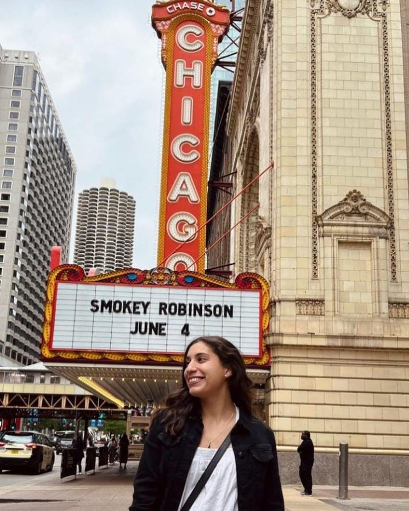

"Desde el principio tuve claro que si me lanzaba, lo haría a través de una agencia. Y así conocí Au Pair Argentina por internet, buscando agencias cercanas en quién poder confiar y que me pudieran aconsejar" Eliana, 23 años, Tucumán.

"Haciendo un resumen de todo, puedo afirmar que mi estancia aquí ha sido maravillosa. Mi familia ha sido un gran apoyo y una gran compañía. Me han aconsejado, me han recomendado sitios que visitar, y he aprendido muchísima cultura con ellos" Miriam, 21 años, Corrientes.

"Esta es una experiencia que recomiendo siempre que me preguntan por ella. Y si es acompañada de una agencia eficaz, cercana y rápida como Au Pair Argentina, te aseguro que va a ser muchísimo más fácil!" Rocio, 22 años, Buenos Aires
"En mi caso, el proceso de búsqueda de familia fue muy simple. Hice 3 entrevistas, ya que las chicas de la Agencia me recomendaron que hiciera varias para así poder elegir la que más se ajustara a mí, y justo en la tercera tuve clarísimo que era mi sitio. En una ciudad pequeña, pero encantadora del oeste de New York", Mariana, Santa Fé, 24 años.

"Decidimos realizar la experiencia juntas, somos amigas hace más de 10 años y siempre quisimos viajar a USA, gracias al programa pudimos hacerlo y estamos muy felices de formar parte de Au Pair Argetina" Luciana y Gabriela, 23 y 24 años, Corrientes.

"También he viajado mucho con la familia, a lugares de playa y hasta a la misma capital, París. Y todo se lo debo en parte a la maravillosa familia de acogida que tuve, siempre pensando en organizar viajes para que yo conociera lo máximo posible. Agradezco muchísimo haber dado con ellos, porque sinceramente no me he sentido sola en ningún momento" Chiara, 19 años, Corrientes.
"Los primero días fueron muy extraños para mí. Estaba sola, en otro país, lejos de mi casa, viviendo con una familia a la que no conocía y hablando un idioma que no entendida. Pero en todo momento la familia fue encantadora conmigo: intentaban hacerme sentir como en casa, que yo formara parte de su día a día y, sobre todo, se esforzaban porque yo los entendiera" Milagros, 26 años, Corrientes.

"odos los procesos, el envío de documentos, la búsqueda de familia, la elección y papeleo posterior fueron muy sencillos y rápidos. Y todo gracias a la agencia que facilita y ayuda en todo momento" Jessica, 26 años, Buenos Aires.

"Para mí, aquí en Irlanda, mis amigas han sido mi segunda familia, con las que salir, viajar, pasar buenos momentos y poder despejarme. Todas aquí venimos solas, entonces rápidamente se forma una gran familia sin conoceros de nada. Pero lo que más me ha gustado de eso es que entre nosotras somos muy distintas, y que a lo mejor personas con la que en tu día a día no te juntarías nunca, aquí han sido de mis mejores amigas" Leila, 21 años, Tucumán.

"Ha sido una experiencia inolvidable y muy positiva. Me vine para aprender francés, y me vuelvo habiendo aprendido mucho más. Por último, recomiendo Au Pair Argentina porque te lo explican siempre todo muy detallado y respondiendo a todas las dudas que te surgirán en el proceso. Son muy simpáticas y siempre sacan un huequito para atenderte y buscarte soluciones" Rocio, 24 años, Corrientes.